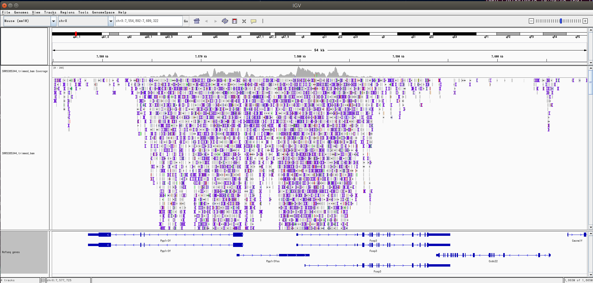
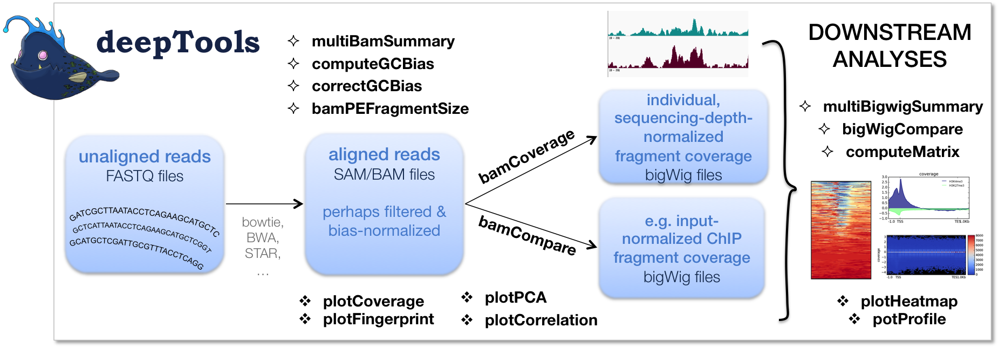
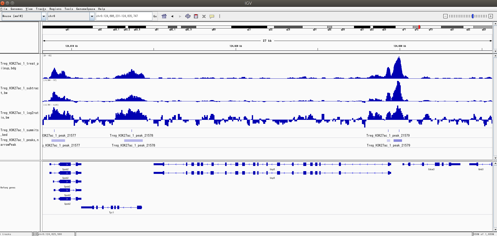
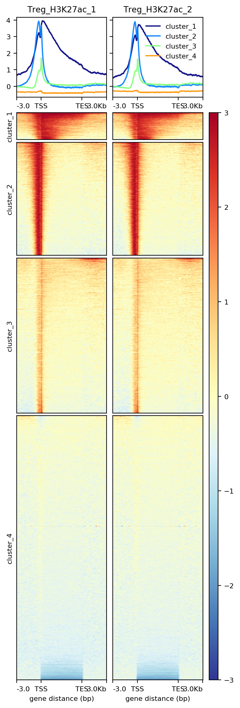

MACS2とdeepToolsのbigwigファイルの比較

ChIP-seqとは
全身で37兆個あるといわれているヒトの細胞は、基本的にすべて同じDNA配列を有している。しかし、肝細胞、網膜、免疫細胞と細胞にはそれぞれの"個性"がある。更には正常の免疫細胞と暴走している免疫細胞など細胞には"状態"もある。これらを制御する大きな要素としてエピジェネティクスが挙げられ、DNAメチル化やクロマチン修飾などが知られている。ChIP-seq (chromatin immunoprecipitation sequence) は特異的クロマチン修飾を受けている領域を、抗体を用いて沈降、濃縮させ、どの細胞のどの領域でどういう修飾を受けているのかを調べるために用いられる。
今回のきっかけ
ChIP-seqの解析をする時に便利なフォーマットにbigwigがある。igvで表示したり、coverageを計算したり、様々な用途で使える。詳しくはdrbonobon（第一版）のp118に記載されている。ChIP-seqの解析にはMACS2というソフトが良く使われ、bigwigの生成も可能だが、deepToolsでもbamCoverageやbamComapre機能を使ってbigwigを作ることができる。挙動や使い所の違いを比較しようというのが今回の目的。
ちなみに、通常のChIP-seq解析ならMACS2,HOMERなどを使ってやるのが無難かと思います。今回はdeeptToolsと戯れたかった。
Install
$ conda install -c bioconda deeptools
$ conda create -n py27_macs2 python=2.7.5
$ conda activate py27_macs2
$ conda install -c bioconda macs2
$ conda install -c bioconda bedtools
$ conda install -c bioconda ucsc-bedgraphtobigwig
$ conda install -c bioconda ucsc-bedclip
condaでmacs2を入れようとするとxonshとdependency conflictしてしまった。諦めて仮想環境を作る。condaは入ってる前提。MACS2はいまだにpython2な時点で腰が引けるが、先に進む。
※ python2.7.4以前だとエラーを吐くらしいので、python2.7.5にしてある。今考えると2.7.15でも良かったかもしれない。
今回使うsample
うちのラボの論文のデータを使ってみます。
Kitagawa, Y. et al. Guidance of regulatory T cell development by Satb1-dependent super-enhancer establishment. Nat. Immunol. 18, (2016).
ここからH3K27acのTregとTconvを使ってみます。
| SRR ID | sample | replicate |
|---|---|---|
| SRR5385260 | input | 1 |
| SRR5385344 | Treg H3K27ac | 1 |
| SRR5385345 | Treg H3K27ac | 2 |
| SRR5385346 | Tconv H3K27ac | 1 |
| SRR5385347 | Tconv H3K27ac | 2 |
これらをお馴染みpfastq-dumpをつかって落としてきます。今回はSingle-endなのでsplitはいりません。
$ mkdir data
$ prefetch SRR5385260 SRR5385344 SRR5385345 SRR5385346 SRR5385347
$ bash pfd.sh
$ fastqc -t 22 -o data data/*.fastq
$ multiqc -n multiqc_report_raw.html ./data
$ bash make_bam.sh
$ fastqc -t 22 -o data data/*.trimmed.fastq
$ multiqc -n multiqc_report_trimmed.html ./data
pdf.sh
#!/bin/bash
sras=("SRR5385260" "SRR5385344" "SRR5385345" "SRR5385346" "SRR5385347")
for s in ${sras[@]};
do
pfastq-dump --threads 22 --outdir data ~/ncbi/public/sra/${s}.sra
done
make_bam.sh
#!/bin/bash
sras=("SRR5385260" "SRR5385344" "SRR5385345" "SRR5385346" "SRR5385347")
for s in ${sras[@]};
do
trimmomatic \
SE \
-threads 22 \
-phred33 \
-trimlog log.${s}.txt \
data/${s}.fastq \
data/${s}.trimmed.fastq \
ILLUMINACLIP:adapters.fa:2:10:10 \
LEADING:20 \
TRAILING:20 \
MINLEN:30
bowtie2 -p 22 -x ~/ref_sequence/bowtie2_indexes/mm10 -U data/${s}.trimmed.fastq -S data/${s}.trimmed.sam >& data/out.${s}.txt
samtools sort -O bam -o data/${s}.trimmed.bam data/${s}.trimmed.sam
samtools index data/${s}.trimmed.bam data/${s}.trimmed.bai
done
改行とコメントがうまく共存できなかったので、以下に注釈付きを示す。より詳しいことはおなじみbiopnpyrusを参照。
trimmomatic \
SE \ # single-end
-threads 22 \ # スレッド数
-phred33 \ # phred33 または -phred64 を指定
-trimlog log.${s}.txt \ # 実行ログの保存先
data/${s}.fastq \ # 入力 FASTQ
data/${s}.trimmed.fastq \ # 出力 FASTQ
ILLUMINACLIP:adapters.fa:2:10:10 \ # アダプター除去条件の指定
LEADING:20 \
TRAILING:20 \
MINLEN: 30 # 30bp を満たさないリードを除去
これでbamファイルが出来ているはず。
igvで表示してみるとこんな感じ。

補足 prefetchのoutputを変更する方法（Yoshiharaさんより）
デフォルトではプロジェクトのディレクトリの外にsraファイルを保存してしまう。また、データ用のストレージを分けている際もそちらに書き出してやりたい。そこでprefetchのoutputを変更したいという話になるわけだが、やり方は2つ。
1)
Toolkit-Configurationをいじる方法。 公式にはこちらが推奨らしいが操作が面倒。
2)
echo ‘/repository/user/main/public/root = “/outputDir”‘ > ~/.ncbi/user-settings.mkfg
こっちのほうが簡単。outputDirに指定してやって下さい。
この例だとpfastq-dumpでは~/ncbi/public/sra/${s}.sra が /outputDir/sra/${s}.sraになりますね。
MACS2によるピークコール
Zhang, Y. et al. Model-based Analysis of ChIP-Seq (MACS). Genome Biol. 9, R137 (2008).
ChIP-seq解析の定番ツールであるMACS2を使う。説明は公式wikiが詳しい。bigwigはpeakcallの副産物的な扱いで、メインはChIP-seqのピーク情報。bigwigは少し回りくどい作り方が必要。詳しくはこちら。
まずはbdg2bwを用意する。~/Programsはpathの通ったディレクトリとする。
$ vim ~/Programs/bdg2bw # emacsでも。中身は以下。
$ chmod 755 ~/Programs/bdg2bw
$ wget http://hgdownload.cse.ucsc.edu/goldenPath/mm10/database/chromInfo.txt.gz
bdg2bwの中身は以下。
#!/bin/bash
# check commands: slopBed, bedGraphToBigWig and bedClip
which bedtools &>/dev/null || { echo "bedtools not found! Download bedTools: "; exit 1; }
which bedGraphToBigWig &>/dev/null || { echo "bedGraphToBigWig not found! Download: "; exit 1; }
which bedClip &>/dev/null || { echo "bedClip not found! Download: "; exit 1; }
# end of checking
if [ $# -lt 2 ];then
echo "Need 2 parameters! "
exit
fi
F=$1
G=$2
bedtools slop -i ${F} -g ${G} -b 0 | bedClip stdin ${G} ${F}.clip
LC_COLLATE=C sort -k1,1 -k2,2n ${F}.clip > ${F}.sort.clip
bedGraphToBigWig ${F}.sort.clip ${G} ${F/bdg/bw}
rm -f ${F}.clip ${F}.sort.clip
これで実行準備が整った。
$ conda activate py27_macs2
$ mkdir macs2 && cd macs2
$ macs2 callpeak -t ../data/SRR5385344.trimmed.bam -c ../data/SRR5385260.trimmed.bam -g mm -n Treg_H3K27ac_1 -p 1e-5 -f BAM -B --nomodel >& macs.SRR5385344.out && bdg2bw Treg_H3K27ac_1_treat_pileup.bdg ../chromInfo.txt
$ macs2 callpeak -t ../data/SRR5385345.trimmed.bam -c ../data/SRR5385260.trimmed.bam -g mm -n Treg_H3K27ac_2 -p 1e-5 -f BAM -B --nomodel >& macs.SRR5385345.out && bdg2bw Treg_H3K27ac_2_treat_pileup.bdg ../chromInfo.txt
$ macs2 callpeak -t ../data/SRR5385346.trimmed.bam -c ../data/SRR5385260.trimmed.bam -g mm -n Tconv_H3K27ac_1 -p 1e-5 -f BAM -B --nomodel >& macs.SRR5385346.out && bdg2bw Tconv_H3K27ac_1_treat_pileup.bdg ../chromInfo.txt
$ macs2 callpeak -t ../data/SRR5385347.trimmed.bam -c ../data/SRR5385260.trimmed.bam -g mm -n Tconv_H3K27ac_2 -p 1e-5 -f BAM -B --nomodel >& macs.SRR5385347.out && bdg2bw Tconv_H3K27ac_2_treat_pileup.bdg ../chromInfo.txt
$ cd ..
-Bでbdgというbedgraphファイルを保存するかどうか。
--nomodelはshifting modelを作るかどうか。defaultでshiftは100。
実際はigvにはbdgファイルも読み込めてしまうので、特にbigwigにする必要はなかった。
deepToolsによるbwファイルの生成

Ramírez, F. et al. deepTools2: a next generation web server for deep-sequencing data analysis. Nucleic Acids Res. 44, W160–W165 (2016).
MAX PLANCK INSTITUTE製のツールで、ChIP-seq, RNA-seq, MNase-seqなどに使えるツールとされている。多サンプルの比較などに向いている。QCや美しいvisualizationが可能。さらにdeepBlueの大量のデータも使える。CLIではもちろんのこと、Galaxyにも対応しているので、そちらでもいいし、Pythonで書かれていてAPIのドキュメントも手厚いのでそちらを使ってもいい。（ちょっとむずかしい。）
今回はinputがあるのでbamCompareを使う。log2ratioがbwファイルに出力される。果たしていけるのか。
bamCompareは
- サンプルごとのスケーリング、depthの正規化
- operation(defaultはlog2ratio)
を行う。binはdefaultで50bp。log2ratioの代わりにlog2, ratio, subtract, add, mean, reciprocal_ratio, first, secondを取得することもできる。今回はsubtract(差分)も合わせて取得してみる。macs2と違ってmultiprocessも動くが、bamのindexが先に必要。macs2に比べるととてもsimpleでよい。
$ mkdir deepTools
$ bamCompare -p 22 -b1 ./data/SRR5385344.trimmed.bam -b2 ./data/SRR5385260.trimmed.bam -o deepTools/Treg_H3K27ac_1_log2ratio.bw
$ bamCompare -p 22 -b1 ./data/SRR5385345.trimmed.bam -b2 ./data/SRR5385260.trimmed.bam -o deepTools/Treg_H3K27ac_2_log2ratio.bw
$ bamCompare -p 22 -b1 ./data/SRR5385346.trimmed.bam -b2 ./data/SRR5385260.trimmed.bam -o deepTools/Tconv_H3K27ac_1_log2ratio.bw
$ bamCompare -p 22 -b1 ./data/SRR5385347.trimmed.bam -b2 ./data/SRR5385260.trimmed.bam -o deepTools/Tconv_H3K27ac_2_log2ratio.bw
$ bamCompare -p 22 --operation subtract -b1 ./data/SRR5385344.trimmed.bam -b2 ./data/SRR5385260.trimmed.bam -o deepTools/Treg_H3K27ac_1_subtract.bw
$ bamCompare -p 22 --operation subtract -b1 ./data/SRR5385345.trimmed.bam -b2 ./data/SRR5385260.trimmed.bam -o deepTools/Treg_H3K27ac_2_subtract.bw
$ bamCompare -p 22 --operation subtract -b1 ./data/SRR5385346.trimmed.bam -b2 ./data/SRR5385260.trimmed.bam -o deepTools/Tconv_H3K27ac_1_subtract.bw
$ bamCompare -p 22 --operation subtract -b1 ./data/SRR5385347.trimmed.bam -b2 ./data/SRR5385260.trimmed.bam -o deepTools/Tconv_H3K27ac_2_subtract.bw
※ 181107 subtractのoutput fileが間違えていたので修正しました。（Yoshiharaさんより）
igvによる比較

上からmacs2, deepTools subtract, deepTools log2 fold changeになっている。macs2の結果はdeepToolsのsubtractに近いことがわかる。
macs2のsummits.bedとnarrowPeakも表示してみた（下2つ）。これはこれで取り回しが効いて良い。narrowPeakはp valueに応じて色が変わっている。
deepToolsが少しギザギザしているように見えるが、binを変えると細かくできる。
おまけ：deepToolsによる可視化
最後に、deepToolsの豊富な可視化機能の一部を試してみる。まず、UCSCよりmm10の遺伝子のbedを取得する。bigwigを用いた可視化はcomputeMatrixした後plotHeatmapなどである。log2 fold changeのbigwigを用いて全遺伝子についてH3K27acのheatmapを書き、クラスタリングも同時にしてみる。全遺伝子についてなのでcomputeMatrixがとても重たくなってしまった。Tconvについては今回は省略。
$ computeMatrix scale-regions \
-S Treg_H3K27ac_1_log2ratio.bw Treg_H3K27ac_2_log2ratio.bw \
-R mm10.genes.bed \
--beforeRegionStartLength 3000 \
--regionBodyLength 5000 \
--afterRegionStartLength 3000 --skipZeros -o matrix.mat.Treg.gz -p 8
# 赤が正になってほしいので_rでリバースする。
$ plotHeatmap -m matrix.mat.Treg.gz -out Heatmap.png \
--colorMap RdYlBu_r --zMin -3 --zMax 3 \
--kmeans 4 --samplesLabel Treg_H3K27ac_1 Treg_H3K27ac_2

plotHeatmapのクラスタリングは複数のサンプルがある時は１つ目のサンプルでクラスタリングするみたい。せっかく他のサンプルもあるのだから、いろいろ混ぜてクラスタリングできたらいいな。 colormapはmatplotlibでおなじみのものである。fontsizeは変更する方法は見つからなかった。これは結構困りどころ。強いて言うならissueで自分で書いてみてねとの回答があった。
deepToolsに関して、いつもお世話になっているmacでインフォマティクスさんにも記事があった。とても詳しい。他にもいろいろな機能があったので是非。
感想
- macs2はpeakcallを目的にしていて、副産物としてbigwigやbdgが出力される。deepToolsは複数のChIP-seqデータなどを扱うのに長けている。逆にdeepToolsはpeak call機能がない。
- deepToolsはIHECのQCに使われていたり、bw作成後のdownstream解析もできたり、RamDA-seqの解析に使われていたりと、頼れるツールの様なので、早いうちにマスターしようと思う。
- TregとTconvのデータを用意した割にはTreg-specific peaksを見るところまでは手が回らなかった。（論文読めば書いてあるが。)特異的ピーク検出をするならHOMERが安定感があって良さそうな。
- ChIP-seq解析のいい練習になりました。
- multi-omics人材になるぞ！
- 前の記事 : GitHub desktopアプリの使い方
- 次の記事 : シェルスクリプト入門(1)
- 関連記事 :